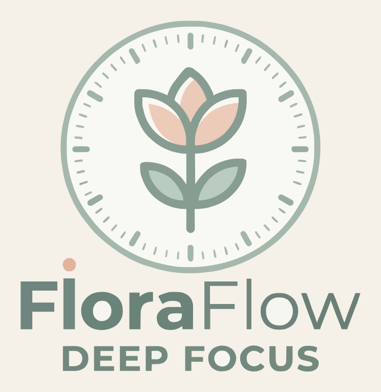
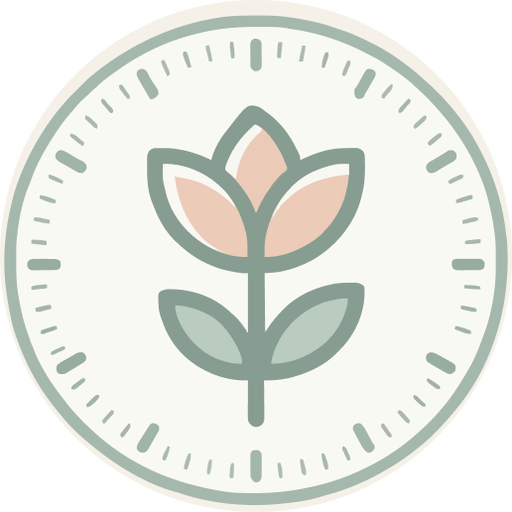

Сесія фокусу
Кожна завершена сесія поливає поточну рослину (4 етапи до квітки).
25:00
Етап росту: 0 / 4 · Стадія: насіння

Гейміфікований таймер фокусу з віртуальним садом
Версія 1.1.0

FloraFlowВкладку закрили, але прогрес збережено: лишилось 12:40
Рослина не втрачається і штрафу немає
Кожна завершена сесія поливає поточну рослину (4 етапи до квітки).
Етап росту: 0 / 4 · Стадія: насіння
Рослина отримала воду та підросла.
Заверши першу сесію фокусу — і в саду почне рости твоя перша рослина.
Приватна статистика прогресу. Дані зберігаються лише на вашому пристрої.
Почни першу сесію, щоб побачити свій ритм фокусу протягом тижня.
Застосовується до кожної нової сесії
М'який звуковий сигнал після завершення таймера
Нагадування браузера про завершення сесії
Браузер не дозволяє показувати сповіщення. Таймер працюватиме, але про кінець сесії не нагадає.
Натисніть на іконку замка 🔒 або налаштувань зліва від адреси сайту в браузері → знайдіть пункт «Сповіщення» → оберіть «Дозволити» та оновіть сторінку.